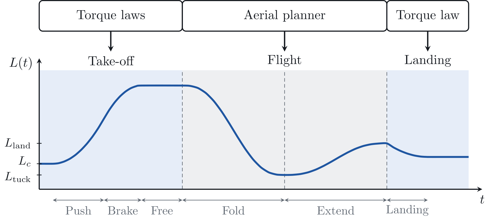

Overview
OTTO jumps straight up by pushing off with its knees, folding its legs in the air, and landing back on its wheels. The jump starts from the ICRA 2026 OTTO method and keeps its three phases, take-off, flight and landing.
That method plans every phase in advance and ends it when its planned time runs out. Here each phase ends on a measurement, because the real lift-off and touchdown do not follow a planned time.
The ICRA 2026 method is published as P. Buasakorn, S. Vongbunyong and K. Thamrongaphichartkul, "OTTO: Dynamics and Control of Wheeled Bipedal Jumping Robot", IEEE ICRA 2026, pp. 2489 to 2496. DOI 10.1109/ICRA57385.2026.11696480.
Process
Push off and brake with the knees
Four knee torque laws cover push, brake, free and landing. They start from the electrical power of a knee, because the motors share one bus and a bench supply cannot absorb current. Braking that returns energy raises the bus voltage, and past the wheel drives' voltage limit the wheels disarm and the robot cannot balance after landing.
Set the take-off speed from the jump height
A two-body model, with a lower mass at the wheels and an upper mass along the leg, gives the take-off velocity needed for a commanded height.
Switch phases on measurements
Lift-off and touchdown are detected from the measurements, and each phase hands over to the next when its measurement is reached.
Plan the flight
An aerial trajectory planner moves the legs in flight, and a flight posture controller holds the body.
Figures and Video
